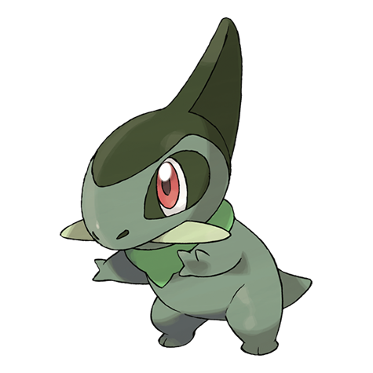

They use their tusks to crush the berries they eat. Repeated regrowth makes their tusks strong and sharp. They mark their territory by leaving gashes in trees with their tusks. If a tusk breaks, a new one grows in quickly.
Stats:
Abilities: